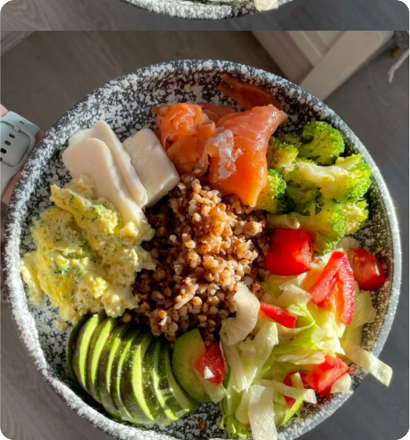

Мы предлагаем путь, который пройдем вместе

Наша идея
Пространство, где о питании говорят честно.
Мы помогаем разобраться в базовых принципах нутрициологии простым и понятным языком, без сложных терминов и крайностей.

Наша миссия
Помочь людям выстроить здоровые отношения с едой и телом — без стресса, чувства вины и крайностей, через осознанность, простоту и поддержку.
Наша цель
Вернуть еде её естественное место в жизни: источник энергии, удовольствия и заботы о себе, а не тревоги и правил. Показать, что такое здоровые отношения с едой.